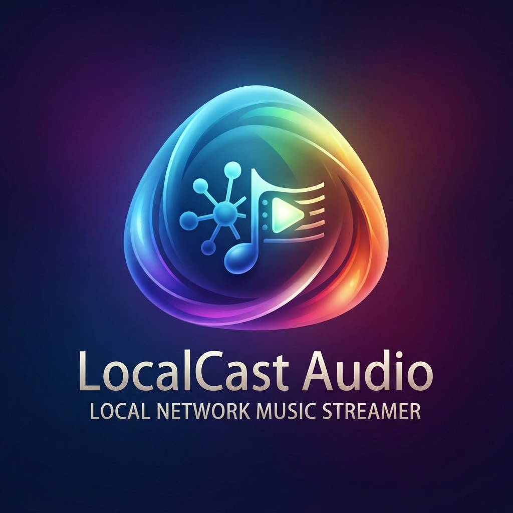

Quick start · Help · Contact
LocalCast Audio
Your music on your local network.
Help for Mac, iPhone and iPad.
Listen to music from a FRITZ!Box, local folders or your device using device playback, AirPlay or a compatible network player.
Mac · iPhone · iPad

What do you need help with?
Start listening in five steps
- Choose a music source
Open Music Sources using the sidebar button. Select your FRITZ!Box, a local folder, or accessible music on your iPhone or iPad.
- Let the library load
Progress appears above the category bar at the bottom and beside the selected FRITZ!Box in Music Sources.
- Choose an audio output
Open the speaker button. Choose device playback, AirPlay or an available network player. Your music source and audio output are separate choices.
- Play an album or track
Browse Albums, Artists, Genres or Playlists. Open an album and choose Play or select a track.
- Check the queue and volume
Use the list button to open the current playback queue. For compatible Yamaha receivers, room volume controls appear in the audio output selection.
Frequently asked questions
My FRITZ!Box or receiver is not found.
Check that your Apple device and the music source or receiver can reach each other on the local network. Allow LocalCast Audio to access the local network on iPhone and iPad. Search for music sources from the Network section in Music Sources; refresh playback devices separately in the audio output selection.
New or changed music is missing.
Wait for the media server to include the changes in its index. Then choose the library refresh action from the music source’s three-dot menu. Searching the network alone does not reload tracks. On iPhone and iPad, extra background time for reading the library is limited.
How can I adjust AirPlay volume for different Yamaha rooms?
Connect the Apple output to your Yamaha using the system AirPlay picker. When a compatible receiver reports AirPlay as its source, a receiver card with room controls appears below the Apple output. Adjust volume and mute for each supported room. In the player, select the room from the volume picker when several AirPlay rooms are available. On the RX-V685, start shared AirPlay in the main zone first. Other AirPlay devices use their respective system volume controls.
A file plays on my iPhone but not on my network player.
Device playback and direct network playback use different audio paths. The receiver must support the specific file format itself. LocalCast Audio can serve supported local MP3 files to a network player while the Apple device remains reachable on the local network. This does not imply support for every local audio format on that path.
Artwork is missing or outdated.
Prepare album artwork using the cover download action in the network music source menu. To replace an existing image, use the album’s reload artwork action; before individual track artwork is enabled, this action is named “Titelcover laden” in the German interface. Refreshing the library alone does not replace an image at an unchanged address. Artwork is cached separately on each Apple device.
How do playlists differ from the playback queue?
A playlist is a saved collection of whole albums or individual tracks, including tracks from multiple music sources. The playback queue is the current playback order. Removing a playlist or a queue item does not delete music files. Items can become temporarily unavailable when their source cannot be reached.
How do I listen without the media server?
Choose the offline save action from a track or album menu, select a folder that is available locally and wait for the download to finish. Then select Downloaded Music in Music Sources. Collection sync does not copy downloaded audio files to your other devices.
What is synced using iCloud?
Playlists, favorite tracks, favorite albums and saved favorite colors can sync through iCloud Drive. Audio files, folder permissions, downloads, selected output and active appearance and audio settings remain specific to each device. Use the same Apple Account and enable iCloud Drive on the devices you want to sync.
Does the app have to stay open for the sleep timer?
For direct Yamaha or network playback, the controller app on iPhone and iPad must stay in the foreground to stop playback on time. An uploaded native Yamaha queue can continue independently, but it does not replace active timer control. Use device playback, Bluetooth or AirPlay when you need a locked screen.
The complete user manual
The full manual is currently available in German. It covers setup, playback, Yamaha rooms, playlists, downloads and troubleshooting. You can also open the offline manual from Help → LocalCast Audio Help on Mac and from the iPad app menu bar, or from Settings on iPhone and iPad. On Mac and iPad with a keyboard, use ⌘?.
Full user manual (German)Need more help?
Send me an email if you need assistance. Please include:
- Your Apple device, operating system and app version
- Your music source and selected audio output
- The exact action and any error message
- A relevant screenshot for display issues
For playback issues, create an audio diagnostic report in Settings → Devices → Advanced and share it with your request. Review the report before sending it.
Write an email